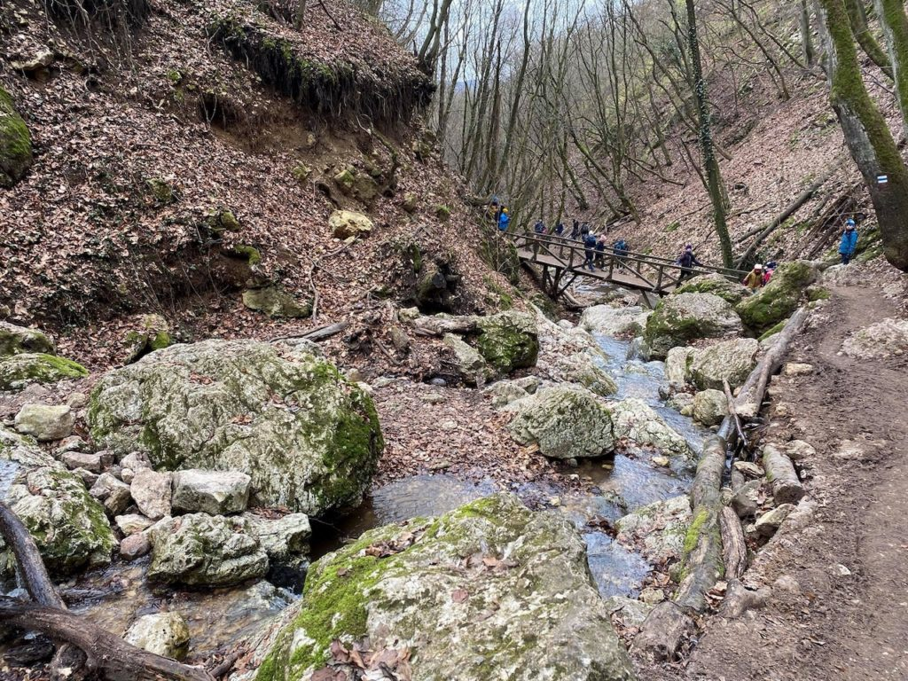
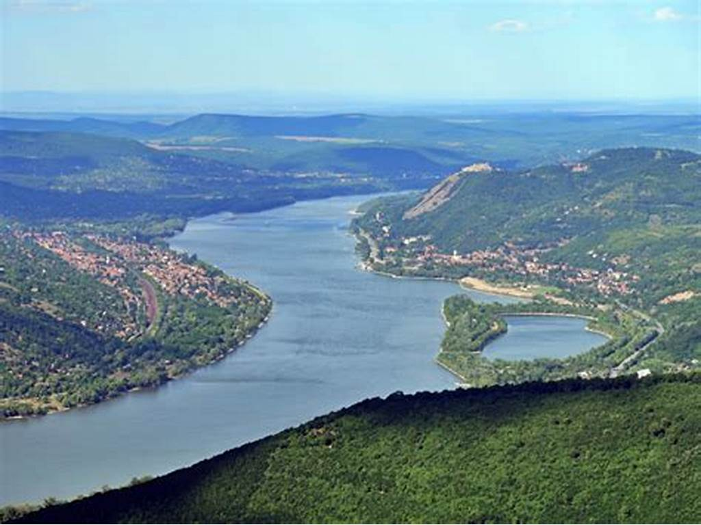

Dera-szurdok
Pilisszentkereszt környékén ered és Szentendrén ömlik a Dunába a Pilis leghosszabb vízfolyása, a Dera- vagy más néven a Kovácsi-patak. A környékbeli szerb lakosság adta a pataknak a Dera nevet, amely lefordítva rést, hasadékot jelent. Ennél találóbban nem is lehetne leírni azt a jelenséget, amit Pilisszentkereszt déli határában láthatunk: a víz mély vájatot ásott a mészkőbe, melyet két oldalról már-már függőleges sziklafalak vesznek körbe. A szurdok alján sejtelmes, mohával fedett, óriási kődarabok fekszenek, mintha a mesebeli óriások kavicsokkal dobálóztak volna hajdanán. Kétoldalt, a meredek sziklafalon megkapaszkodó fák lombjai még a legnagyobb kánikulában is megőrzik a hűvöset a völgyben. Érdemesebb azonban csapadékosabb időben jönni, hiszen az ide medret vágó patak nyaranta akár teljesen ki is szárad (vagy a mélyben, a mészkő belsejében csörgedezik).
Rám szakadék

A szakadék maga egy vulkáni eredetű, nagyjából észak-déli irányban futó szurdokvölgy. Összeszűkülő sziklafalai olykor merőlegesek, de vannak befelé dőlő falak is. Mélysége több helyen meghaladja a 35 métert, míg szélessége helyenként a 3 métert sem éri el. A szurdokban 112 méteres szintkülönbséget kell leküzdeniük a túrázóknak. Természeti adottságai miatt egyike a legnehezebben járható magyarországi jelzett turistautaknak, ahol akár kőgurulás, sziklaomlás is előfordulhat, ezért a Rám-szakadékot mindenki saját felelősségére látogathatja.Összeszűkülő sziklafalai olykor merőlegesek, de vannak befelé dőlő falak is. Mélysége több helyen meghaladja a 35 métert, míg szélessége helyenként a 3 métert sem éri el. A sziklamederben állandóan csörgedezik a víz, amely hóolvadáskor és nagyobb esők idején patakká duzzad. A szurdokban összességében 112 méteres szintkülönbséget kell leküzdeniük a túrázóknak.
Prédikálószék
A Prédikálószék valóban fenséges trónként ül a Dunakanyar fölött. A 639 méter magas tetőről a Duna patkó alakú kanyarjára nyílik panoráma, szemben a kis, sziklás élekre szabdalt oldalú Szent Mihály-hegy, hátterében pedig a Börzsöny tömege emelkedik a folyó szalagja fölé. A nagyszerű látvány szépségét tetemes magasság és jelentős meredekség fokozza. De a kilátás nem csak észak felé emlékezetes: keleti irányban a Visegrádi-hegység Duna felé lefutó gerincei és a Naszály tömege uralják a látképet, de a visegrádi várat is könnyű észrevenni. Tiszta időben egészen a Mátráig elláthatunk. Az erdős hegyvidékek és a Visegrádi-szoroson átvágó folyó összhangja a festői látványt az Északnyugati-Kárpátok természeti csodáinak sorába emeli. Bár a Prédikálószék elsősorban a Duna kanyarjának látványáról nevezetes, a kelet felé kirajzolódó, sűrű hegyvilág képe önmagában is a hegység ékessége lehetne.